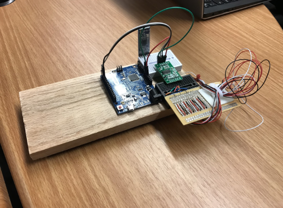
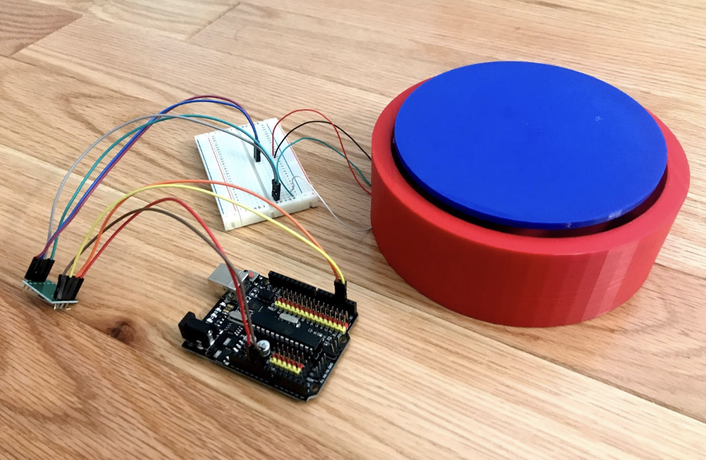
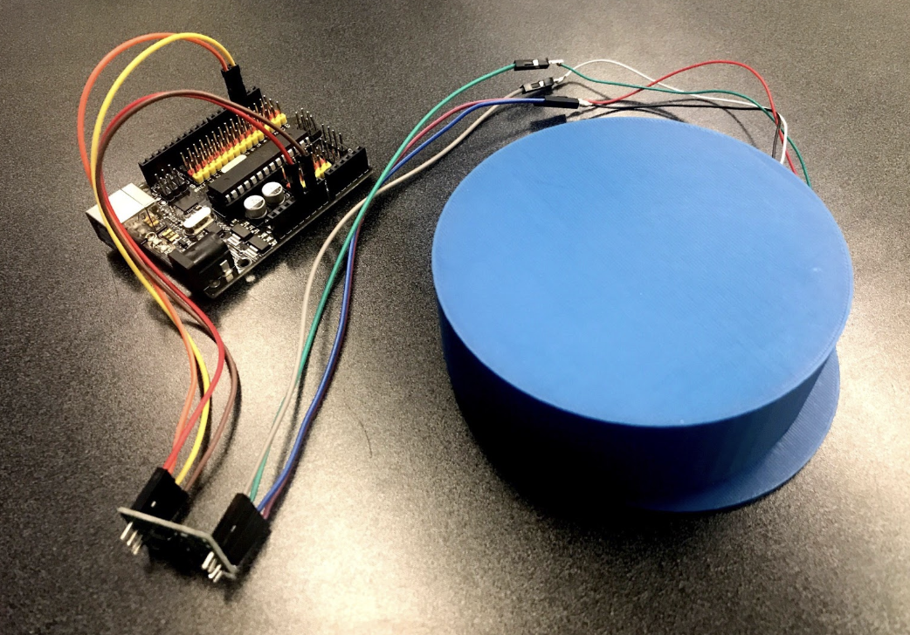
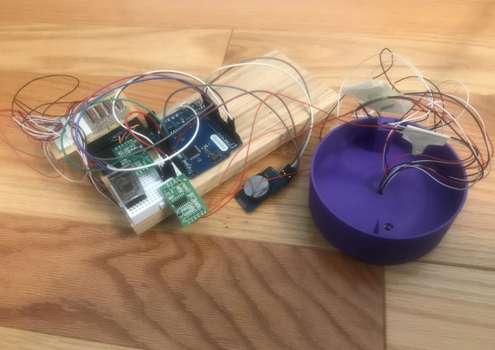
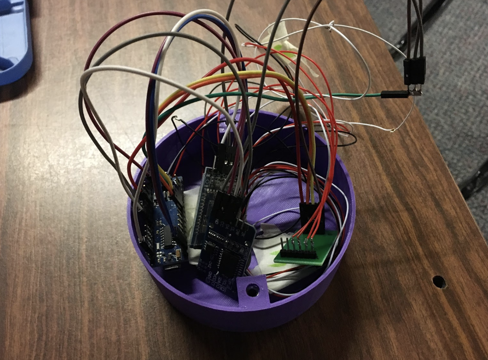

STEM is a course which focuses on two projects the whole year. The first project would be presented at science fairs in December and February, and the grades of the first three terms are almost purely based on the project. The second project is introduced in the middle of C term (when the first project would be done) and that would be what we do for the rest of the year. This course is taught by Mrs. Siobhan Curran.
This term was largely based on brainstorming for an original project idea. The project has to be unique and never done before. I decided that I will most likely be doing a project on music temperament, though it does not seem promising.
During B Term, we mainly focused on getting the paperwork done and working on the project. I decided on the music temperament idea, and that's what I worked on for most of B term. We would have regular weekly checks, where we submit our progress to the teachers and we can get feedback on what to fix and how to proceed. Besides working directly on our projects, we also learned about certain statistical tests we can use to evaluate our work.
Click here to see the statistics presentation I made with two of my classmates.
Click here to see my December fair poster.
After the end of STEM I, STEM II began immediately. STEM II is a project during the second half of the school year where we team up into groups to make products for clients at a foundation like Seven Hills or Elder Services. For our group, we chose to make something for a client at Elder Services who has dementia and often forgets to drink water. Because this project requires hardware and software, we combined STEM II and Apps for Good into one mega-project for this purpose. Anyway, to address this problem, our group made a waterbottle that tracks water intake and sends the data to an app, where the data is processed, saved to Firebase (an android cloud service), and displayed to the user. On this page, focus will be placed on the hardware side of the project.
In order to track water consumption, we decided to measure the change in weight of the waterbottle and if the change is significant enough to be a drink, then it will be registered as a drink. To accomplish this, we formerly made an unattached base that contains four load sensors, a bluetooth low energy module, and an arduino nano. This contraption would track the weight and send the data to an app whenever the weight changes. The app then calculates whether or not a drink has been taken. However, we eventually had to make the base into an attached base since we originally forgot to take into account the fact that the client may also forget to put the water bottle back on the base. For more information on the hardware side of the project, visit Bharath's Website or Anna's Website, my groupmates. They were more focused on the hardware side of the project while I was more focused on the software side of the project. Bharath primarily worked on CAD-ing (3D modeling) the base and water bottle while Anna worked on the arduino components. The images below shows our prototypes, with the earliest ones on the left and the latest ones on the right.
    